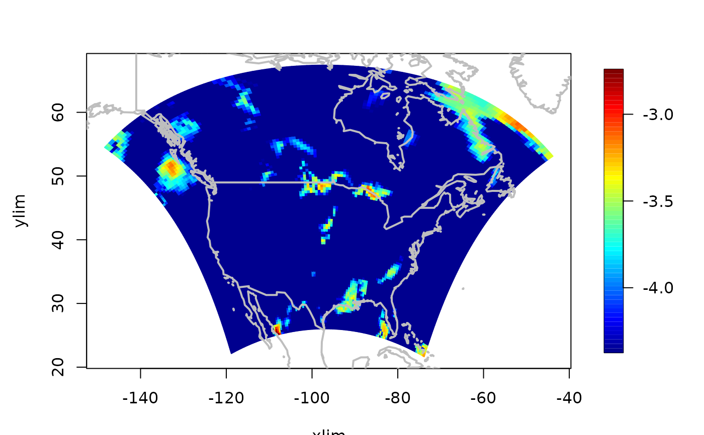

RCMexample.RdThese are few model output fields from the North American Regional Climate
Change and Assessment Program (NARCCAP).
The images are transformed surface precipitation fields simulated by the WRFP
regional climate model (RCM) over North Amreica forced by observation
data. The fields are 3 hour precipitation for 8 time periods in January
1, 1979. The grid is unequally spaced in longitude and latitude appropriate projection centered on the model
domain.The grid points are nearly equally spaced in great circle distance due to this projection. Precipitation is in a log 10 scale where values smaller than
4.39e-5 ( the .87 quantile) have been been set to this value. Longitudes have
been shifted from the original coordinates (0-360) to the range (-180-180) that
is assumed by the R map function.
data(RCMexample)The format is a list of three arrays:
x: 123X101 matrix of the longitude locations
y: 123X101 matrix of the latitude locations
z: 123X101X8 transformed matrix of precipitation
Spatial units are degrees with longitude being -180,180 with the prime meridian at 0. Precipitation is log 10 of cm / 3 hour period.
This is primarily an example of a regular grid that is not equally spaced and is due to transforming an equally spaced grid from one map projection into longitude latitude coordinates. This model is one small part of an extension series of numerical experiments the North American Regional Climate Change and Assessment Program (NARCCAP). NARCCAP has used 4 global climate models and observational data to supply the atmospheric boundery conditions for 6 different regional climate models. In the current data the forcing is the observations derived from the NCEP reanalysis data and is for Janurary 1, 1979. The full simulation runs for 20 years from this starting date. See the NARCCAP web page for more information about these data.
To facilatate a better representation of these fields the raw precipitation values have been transformed to the log scale with all values below 4.39E-5 cm/3 hours set to this lower bound.
data(RCMexample)
# second time period
image.plot( RCMexample$x, RCMexample$y, RCMexample$z[,,2])
world( add=TRUE, lwd=2, col="grey")
